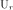

Since the programs represent significant rewrites of existing codes, it is necessary to test the codes. The simplest way is to compute the strains and rotations numerically and then to compare these to the results of the new codes.
As discussed in the theory section, the strains require the following partial derivatives: , and where the is  , or . The partial with respect to is computed analytically, while the other two can be numerically approximated using a centered difference, e.g.,
and similarly for the partial with respect to . One must be careful when doing this since the estimate depends on the frequency content of the signal and the duration of the source time function. In the examples that follow the sampling interval is 0.25s, the source pulse duration of 1.0s and the S-wave propagation velocity is on the order of 3.5 km/s. The receiver depth was take to be 3.0km, which is in layer 2. Also km and km.
The validation code is contained in the file CPSstrain.validate.tgz. To run the tests, do the following:
gunzip -c CPSstrain.validate.tgz | tar xvf - cd CPSstrain.validate DOALL
The result of the computations are in the directories D_DOSTRAINCMP.dir for a moment tensor source and D_DOSTRAINCMPF.dir for a point force.
The DOALL invokes four scripts:
Note that the scripts DOSTRAINCMP and DOSTRAINCMPF use the program convert from the ImageMagick package to convert the Encapsulated PostScript eps files to PNG images.
The following set of figures show the velocities and strains at a depth of 43.0 km in the CUS velocity model used. For this presentation, the Z-axis is positive down while the R-axis is positive away from the source. Each figure is annotated with the particular file and the component or motion. For example,
SW/005000_0100_0030.Uz - Z-component ground velocity in m/s using
modal superposition of new codes
WK/005000_0100_0030.Uz - Z-component ground velocity in m/s using
wavenumber integration of new codes
SWkm/Uz - Z-component ground velocity in m/s using
modal superposition of original codes
WKkm/Uz - Z-component ground velocity in m/s using
wavenumber integration of original codes
Thus the leading WK or SW indicate the results of the new codes, while the WKkm or SWkm indicate that the strains were estimated using the centered difference numerical differentiation.
In the file annotation, the Err = err, Erf = erφ, Erz = erz, Eff = eφφ, Efz = eφz, and Ezz = ezz.
| Moment tensor source | Point force source |
|---|---|
The agreements are excellent. The slight differences are as follow: